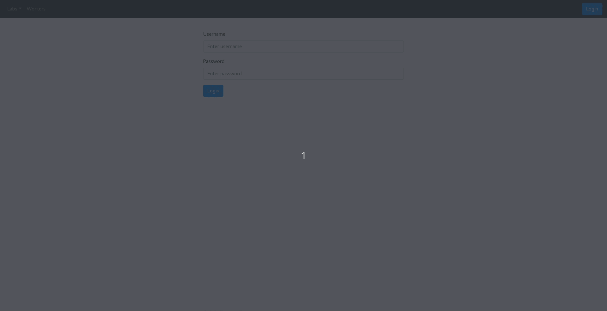
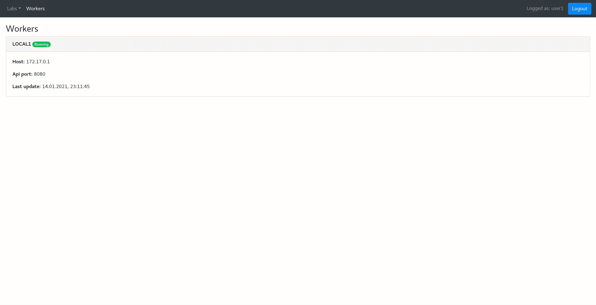
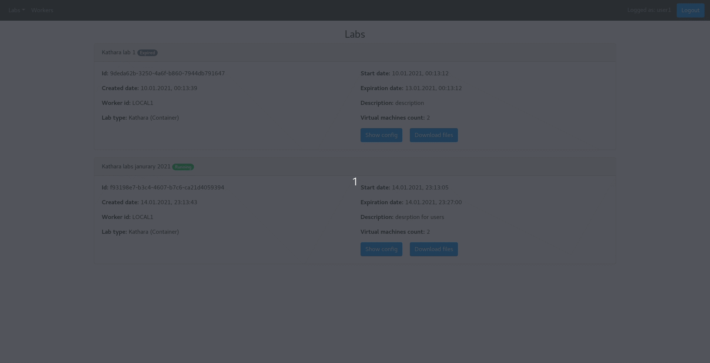
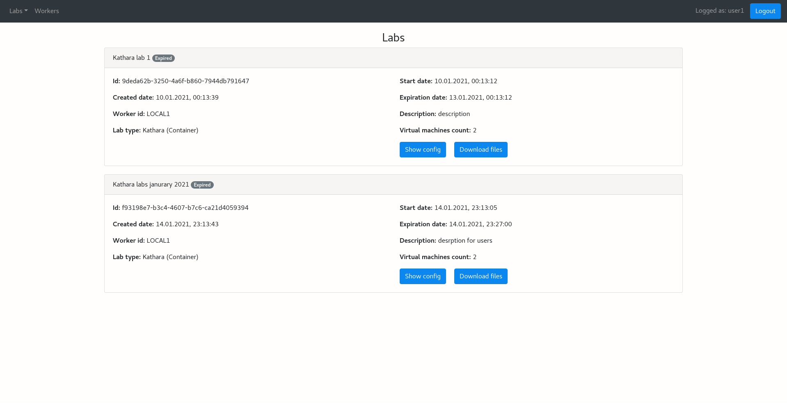

Automatyzacja tworzenia wirtualnego laboratorium sieci programowalnych
“Laboratorium as a Service” - automatyzacja tworzenia wirtualnego laboratorium
Motywacja - ułatwienie procesu edukacyjnego
- Prosty, intuicyjny interfejs aplikacji
- Ograniczenie dostępu do aplikacji oraz laboratorium
- Otwartość na różne technologie oraz dalszy rozwój
- Skalowalność systemu
- Wszystkie wymagania zostały zrealizowane
- Uniwersalność rozwiązania - laboratoria dotyczące dowolnej technologii
-
Mała baza gotowych laboratoriów
- Basic linux
- Kathara (2 wersje - Virtualbox oraz Docker)
- P4
- R lang
- Skalowalność
- Zagnieżdżona konteneryzacja
- Chmura obliczeniowa





- Code review
- Testy aplikacji
- CI/CD oparte o Azure Pipelines
- Terraform
- Moduł do śledzenia zachowań
- Powiększanie bazy dostępnych laboratoriów
- Dołączanie pliku podczas tworzenia laboratorium
- Automatyczna weryfikacja rozwiązań
- Statystyki maszyn
- Maszyna jako plik
- Panel administratora